単元1: 材料と加工の技術
ものづくりの基本となる「木材」「金属」「プラスチック」の特徴や性質、製図のルール、そして工具の正しい使い方について整理します。特に工具の使い方は、テストで図入りの問題として非常に出題されやすいので、イラストと一緒に確実に覚えましょう！
1. 木材の特徴と分類
木材は、切り出し方や木の成長過程によって性質が異なります。テスト頻出ワードが満載のセクションです。
① まさ目材と板目材
丸太からの切り出し方によって、木目の見え方や変形のしやすさが変わります。
- まさ目材（まさめざい）：年輪に対してほぼ直角に切り出した板。年輪が平行な縞模様に見え、乾燥したときの変形（反りや収縮）が少ないのが特徴です。
- 板目材（いためざい）：年輪の接線方向に切り出した板。木目がタケノコのような山形模様になり、乾燥すると木表（樹皮に近い側）の方向に反る性質があります。
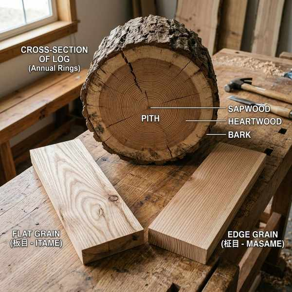
平行な木目が美しい「まさ目材」
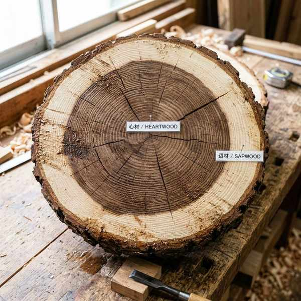
乾燥すると木表側に反る「板目材」
② 針葉樹と広葉樹
- 針葉樹（しんようじゅ）：スギやヒノキなど。軽くて柔らかく、加工しやすいため建築材などに使われます。
- 広葉樹（こうようじゅ）：ケヤキやナラなど。重くて硬く、傷つきにくいため主に家具などに利用されます。
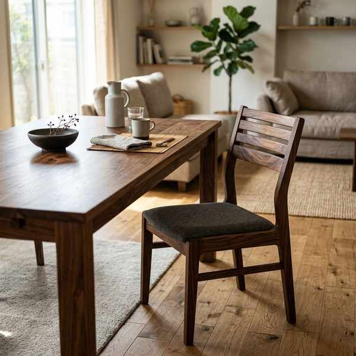
硬くて丈夫な広葉樹材
③ 年輪と木の部位
- 心材（しんざい）：幹の中心に近い、色の濃い部分。成長が止まっており、硬くて虫がつきにくく、変形しにくい。
- 辺材（へんざい）：樹皮に近い、色の薄い部分。水分や養分を通すため柔らかく、水分を含みやすい。
- 早材（春材）：春から夏にかけて急速に成長した部分。色が薄く、柔らかい。
- 晩材（夏材）：夏から秋にかけてゆっくり成長した部分。年輪の色の濃い部分で、硬くて緻密です。
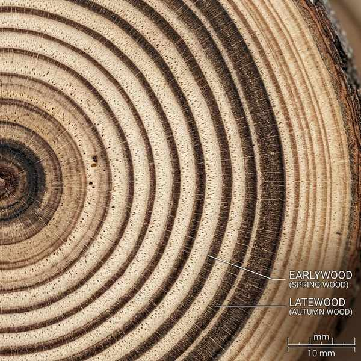
色の濃い「心材」と外側の「辺材」
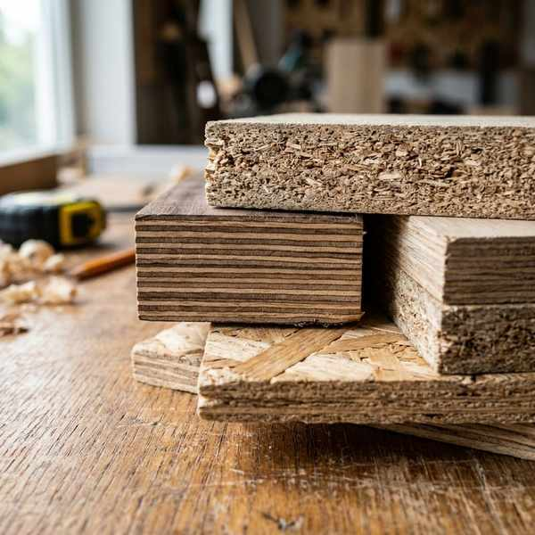
年輪の濃い境界線をなす「晩材」
④ 木質材料（人工木材）
無垢の木材が持つ「乾燥すると変形しやすい」「幅の広い板が取れない」という弱点を克服した人工の材料を木質材料（もくしつざいりょう）といいます。
- 合板（ごうはん）：薄くむいた木製の板（ベニヤ）を、繊維方向が交互に直交するように重ねて接着した板。
- 集成材（しゅうせいざい）：小さな木材を繊維方向にそろえて接着した材料。長さや強さを自由に作れる。
- その他：パーティクルボード（木材チップを接着）、ファイバーボード（木材繊維を接着）など。
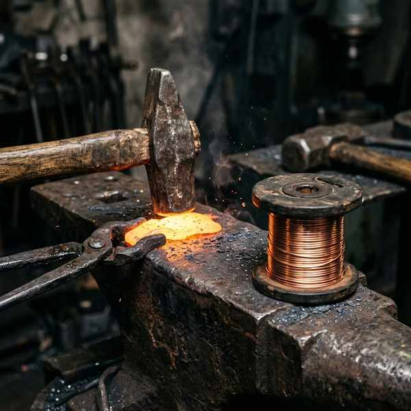
様々な人工木材（合板・集成材等）
2. 金属とプラスチックの性質
① 金属の性質
- 熱や電気を伝えやすい（導電性・熱伝導性）。
- 展性（てんせい）：たたくとうすく広がる性質。
- 延性（えんせい）：引っ張ると細く伸びる性質。
- 合金（ごうきん）：溶かした状態で他の金属などを加え、冷やして固めたもの。強度やさびにくさが向上する（例：ステンレス、真鍮）。
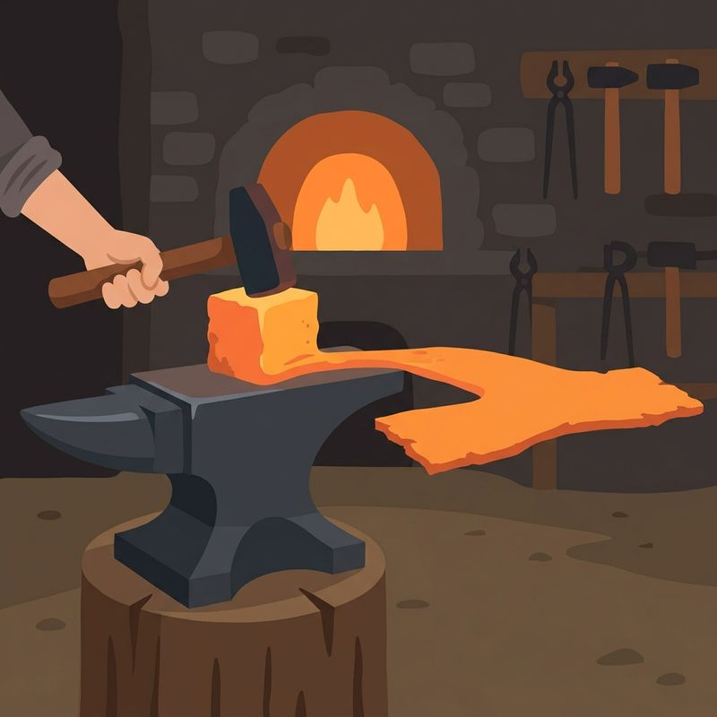
たたくとうすく広がる「展性」
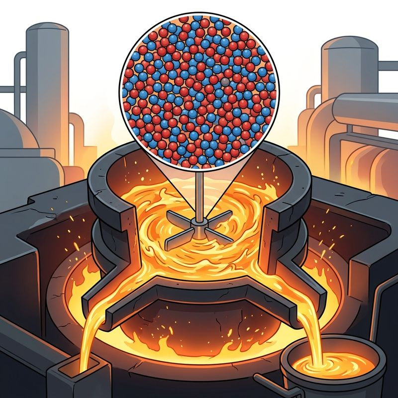
さびにくく強い「合金（スチール缶等）」
② プラスチックの性質
熱に対する変化の違いによって2種類に分類されます。
- 熱可塑性（ねつかそせい）プラスチック：熱を加えると柔らかくなり、冷やすと固まるプラスチック（例：PET、ポリエチレン）。リサイクルしやすい。
- 熱硬化性（ねつこうかせい）プラスチック：熱を加えると硬くなり、再び熱しても柔らかくならないプラスチック（例：メラミン樹脂）。熱や電気に非常に強い。
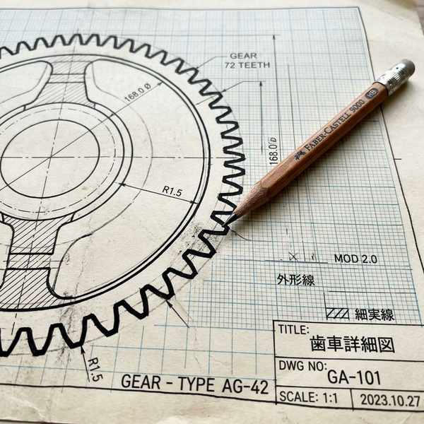
熱を加えると変形できる熱可塑性プラスチック
3. 製図のルールと描き方
図面の描き方や線・記号の意味は記述問題でもよく狙われます。
① 製図法
- 等角図（とうかくず）：斜め上から見た立体図で、幅・高さ・奥行きの3方向の軸で作る角度を等しく（通常30°）描く図法。
- キャビネット図：正面をそのまま描き、奥行きを45°傾けて実寸の半分（1/2）の長さで描く図法。
- 第三角法による正投影図：正面図、平面図、側面図の3つで表す、最も正確な図面。
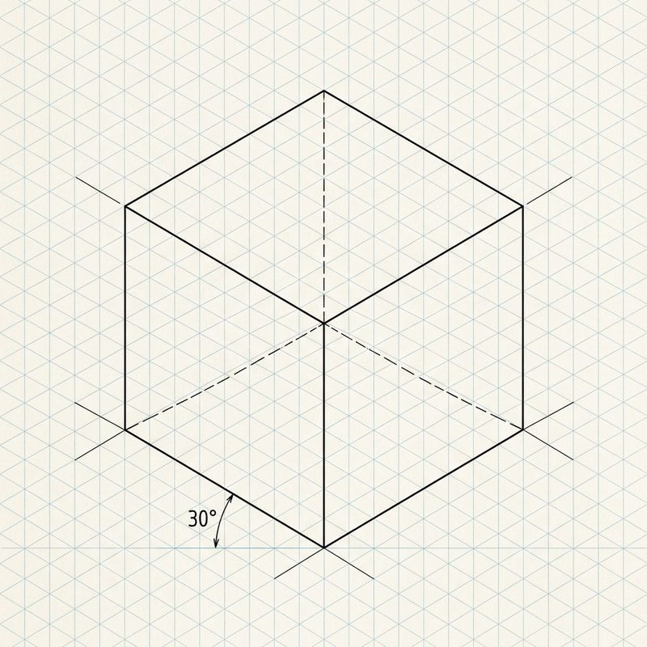
30°の基準線をもとに描く「等角図」
② 図面に使う線と寸法補助記号
- 外形線（がいけいせん）：対象物の見える外形を表す、太い実線。
- かくれ線：陰に隠れて見えない部分を表す、破線（点線）。
- 中心線：対称軸や中心を示す、細い一点鎖線。
- R：半径（Radius）を表す寸法補助記号（例：R5＝半径5mmの円弧）。
- t：板の厚さ（thickness）を表す寸法補助記号（例：t12＝板厚12mm）。
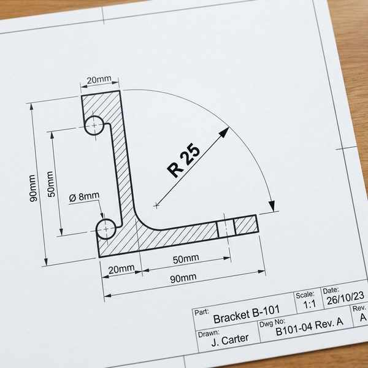
図面の輪郭をはっきり示す「外形線」
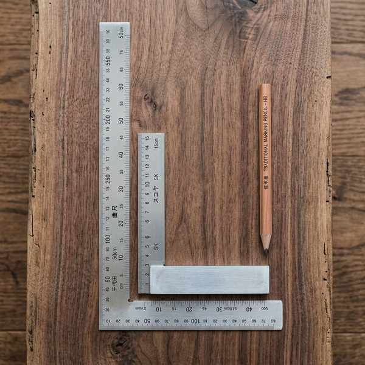
角の半径を示す記号「R」
4. 木工用工具の正しい使い方
ペーパーテストで実技手順として最もよく狙われる工具の操作方法です。
① さしがねによる「けがき」と「切断線」
- 材料から部品を取るために、材料の表面に線を引くことをけがきといいます。
- 直角に線を引くときは、さしがねの内側を材料の基準面に当てて使用します。
- のこぎりの刃の厚み（1mm程度）を考慮し、仕上がり寸法線の数ミリ外側に切断線（切りしろ）を引きます。
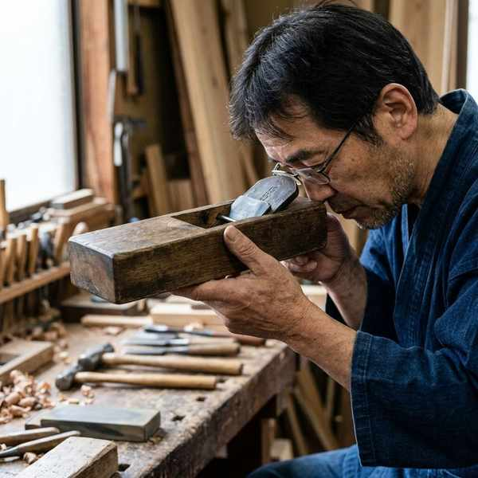
さしがねの内側を当てて直角を測る
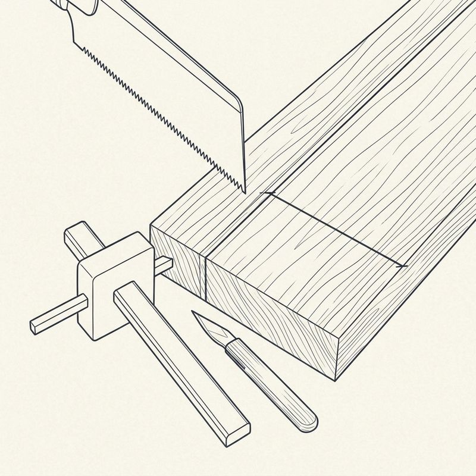
のこぎり刃の厚みを考慮した「切断線」
② のこぎり（両刃のこぎり）
- 縦びき用の刃：木目の方向に沿って切るための刃。刃先が「のみ」のようになっており、繊維を削り取る。
- 横びき用の刃：木目の方向を遮って（直角に）切るための刃。刃先が「小刀」のようになっており、繊維を切断する。
- あさり：のこ刃が左右にふり分けられている構造。切り口の幅をのこ身の厚さより広くし、摩擦を防いで引きやすくする効果があります。
- 切り方：のこぎりは引くときに力を入れます。切り終わりの直前は、端が欠けないように軽く引き、端を他の人に支えてもらうか、左手で支えます。
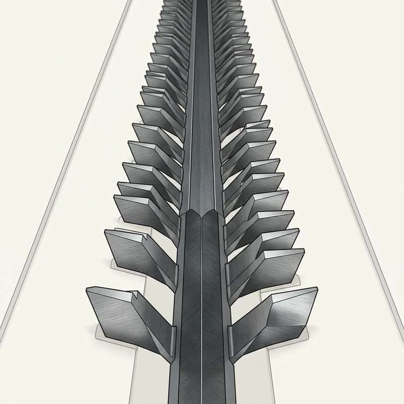
切り口を広げて引っかかりを防ぐ「あさり」
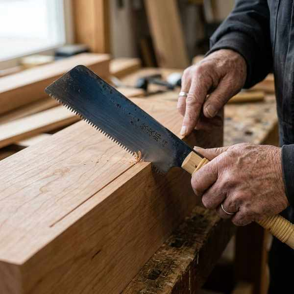
のこぎりは引くときに切れる（引き切り）
③ かんな
- かんな身：削る厚さを調整する刃。
- 調整方法：刃を出すときは、かんな身のかしらをハンマー（げんのう）でたたきます。刃を引っ込める・抜くときは、台じりをたたきます。
- 木口（こぐち）の削り方：年輪の断面である「こぐち」は非常に割れやすいため、端まで一気に削らず、まずは3分の2ほど削り、裏返して残りを削るようにします。
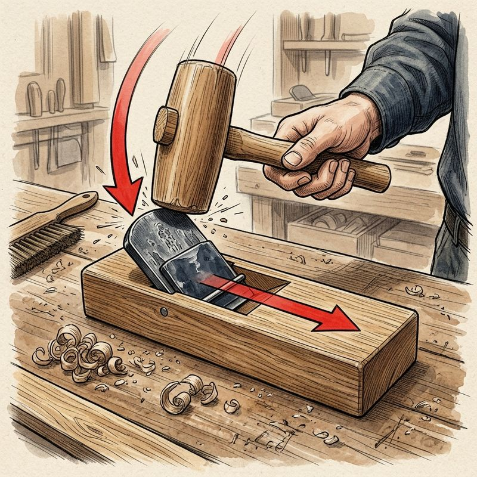
刃を出すときは「かんな身のかしら」をたたく
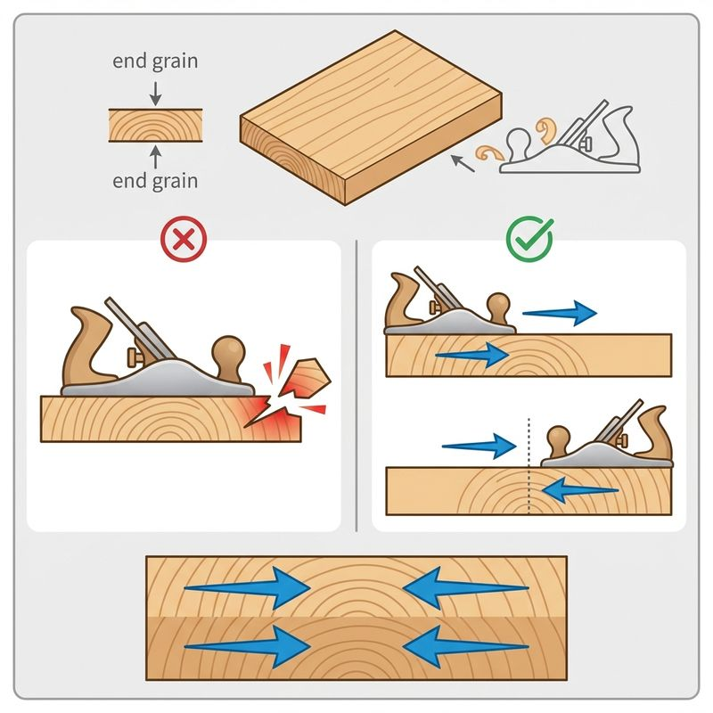
木口は両側から（2/3ずつ）削る
④ 釘（くぎ）打ちとねじ止め
- 釘の長さ：板の横の面（こば）に釘を打つとき、釘の長さは板の厚さの2.5〜3倍のものが適切です。
- 釘の打ち方：打ち始めは平らな面で、最後は板を傷つけないようにげんのうの曲面（凸面）で打ち込みます。釘が曲がったら「くぎ抜き」で抜きます。
- ねじ止め：ドライバーでねじ止めをするときは、ねじ込むほど大きな右回し（時計回り）の力が必要になります。
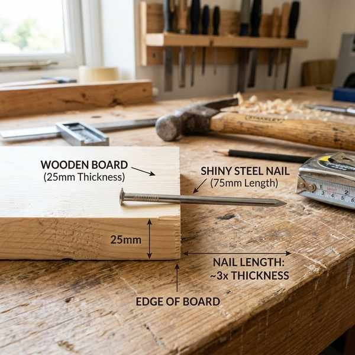
板厚の2.5〜3倍の釘を使用する
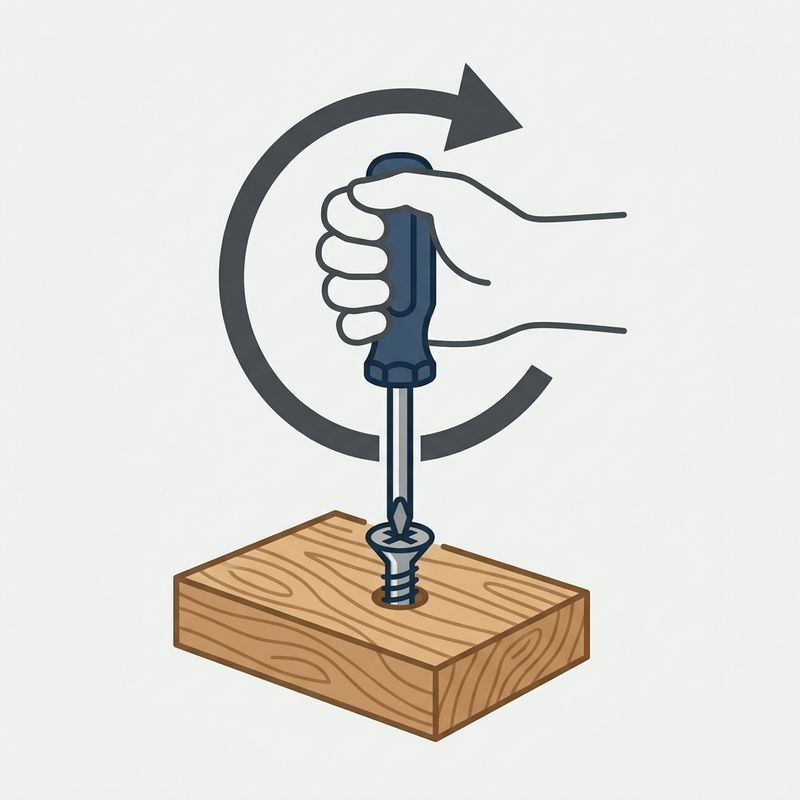
ねじは時計回りに回して締める
🔥 定期テスト対策・暗記のコツ
① まさ目・板目の反りの違い
「まさ目は平行・変形少」「板目は山形・木表側に反る」。この対比は選択問題で100%と言っていいほど出題されます。木表が「樹皮に近い＝外側」であることも覚えておきましょう。
② かんな調整の「たたく場所」
「刃を出す ➔ かんな身のかしら（金属部分の頭）」「刃を引っ込める ➔ 台じり（木製台の後ろの角）」。台がしらをたたくと刃が出てしまうので注意！
③ のこぎりの縦びき・横びき
「木目に沿う ➔ 縦びき」「木目を横切る ➔ 横びき」です。縦びきは繊維を削るため刃が粗く、横びきは繊維を断ち切るためカッターナイフのような細かい刃が並んでいます。